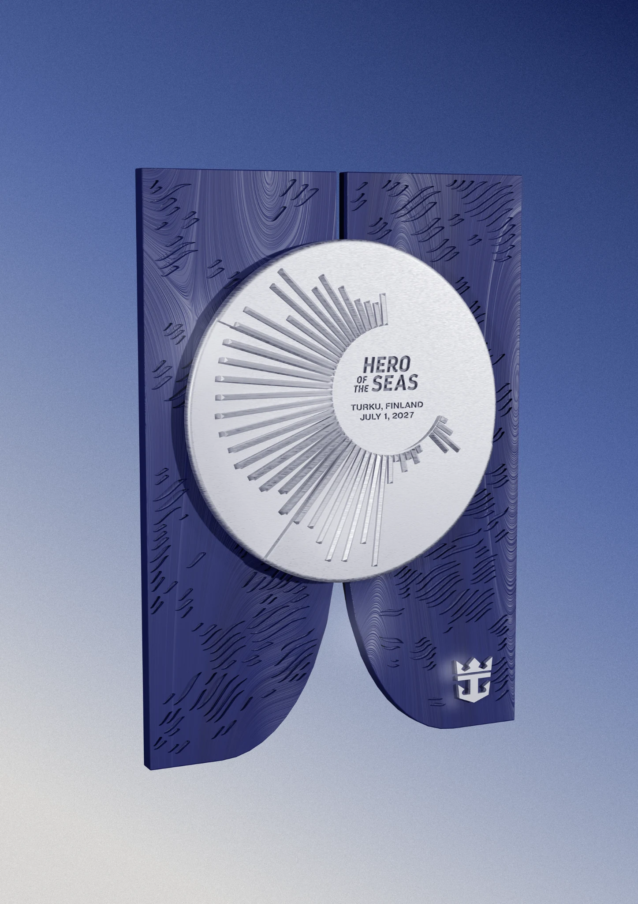
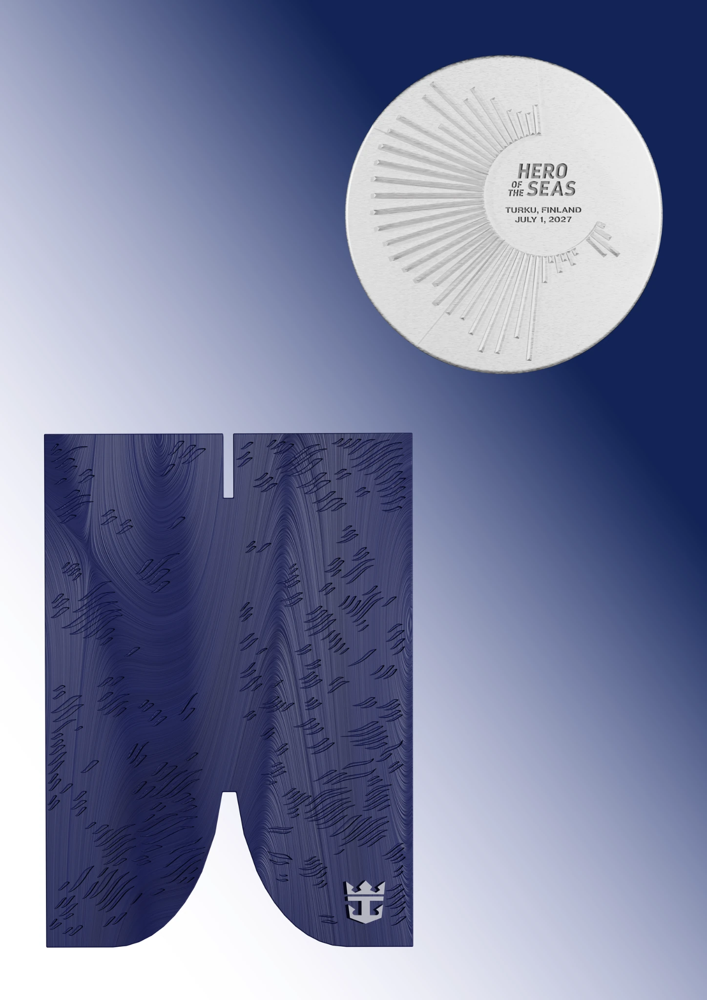
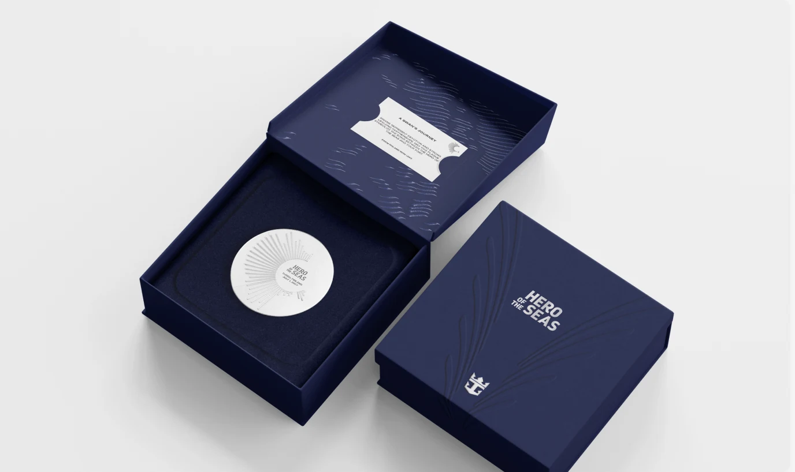

A link to shipbuilding
The proposed steel medal takes its cue from the steel-cutting ceremony, when the first piece of steel is cut for a new ship.
Sounds of the Archipelago
The ceremonyA first port visit
A commemorative plaque from the Finnish archipelago, brought together by a ship and its host port.
Discover the plaque
The proposed steel medal takes its cue from the steel-cutting ceremony, when the first piece of steel is cut for a new ship.
The ceremony
At the first port visit, the ship and port representatives bring the medal and backing together. Placing the medal on the backing completes the plaque in a gesture inspired by the swan’s lifelong bond.


A gift to mark the first visit and the start of a lifelong relationship.